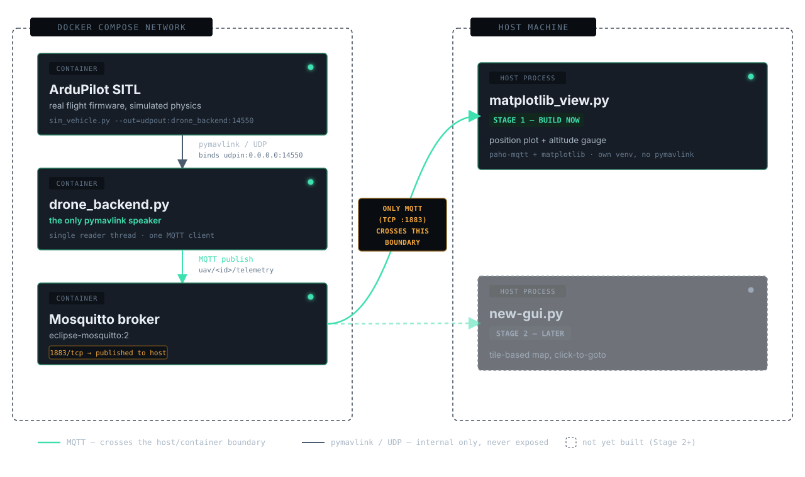

Stage 1 — ArduPilot SITL, an MQTT contract, and your first drone frontend.
STAGE 1 OF 6 · pymavlink ↔ MQTT plumbingThe open-source autopilot firmware that flies the aircraft — not a simulator, not a toy, the real flight-control stack.
Both are excellent, mature, open-source autopilot stacks. The decision here isn't about which is "better."
Code, MAVLink message handling, and workflows you build against SITL this semester carry over directly to the physical hardware later — same firmware family, same parameters, same behavior.
PX4 is a strong, actively developed alternative used widely in research. If your target hardware ran PX4, this course would too — the choice tracks the aircraft, not a technical preference.
Software-In-The-Loop: the real ArduPilot flight-code binary, running against a simulated physics model instead of real motors and sensors.
Everything this week runs in simulation. This is what your code eventually flies on.

The topic schema is the contract — a clean, concrete example of interface design, not just plumbing.
Published once, retained by the broker — any client subscribing later still gets it immediately, including clients that join mid-flight.
Lat / lon / alt is the only frame that ever crosses a system boundary — it matches how MAVLink represents position natively, and stays stable as more clients join.
Metres-from-an-origin math a client computes for its own use (e.g. a legible 2D plot). Never published, never shared truth between clients.
Why it matters: two clients quietly disagreeing about where "local (0,0)" is produces a bug class that's miserable to debug — correct in one view, subtly wrong in another. The retained uav/<id>/home topic fixes this — one shared origin, delivered to every client the moment it subscribes.
The obvious layout — backend on the host, SITL in Docker — was the original plan. It didn't survive contact with real networking.
MAVProxy's --out is client-mode (udpout), pymavlink's bare udp: prefix has shifted bind/connect semantics across versions, and Docker Desktop vs. native Linux/WSL2 disagree about host.docker.internal.
drone_backend binds udpin:0.0.0.0:14550 (listens). SITL launches with --out=udpout:drone_backend:14550 (connects out, by name). No port published for this link at all — only MQTT crosses the host boundary.
General rule this leaves you with: containerize infrastructure nobody needs to touch (version-pinned, reproducible — "does this work" reduces to "does Docker run"). Keep what you and Claude Code edit constantly — drone_backend.py's source is bind-mounted, and your viewer runs straight on the host — so no rebuild-and-restart cycle gets added to routine editing.
Raw autoscale fits tightly to whatever data exists — including a few centimeters of GPS/EKF noise while sitting still, which visually blows up into what looks like a wild flight. The floor only grows once the vehicle actually flies further.
Reads as a comet-tail trailing the vehicle, not the whole mission's path slowly aging out over a full minute.
Replaced an earlier circle + quiver-arrow combination — a single rotating shape reads heading faster at a glance.
Marker, trail, and altitude gauge all pull from one constant — so a future second vehicle (Stage 6) reads as one consistent visual signature, not just a differently-colored dot.
None of these are bugs in your code. They'll look like it if you don't know them going in.
ArduCopter leaves mode: "LAND" reported indefinitely after touchdown and disarm — it only changes on the next explicit mode switch. Check armed too if "currently landing" matters.
EKF/GPS not settled yet, or "Gyros inconsistent." Expected, not a bug — handle it with bounded retries, not by failing immediately.
Mainly bites during manual MAVProxy console testing — arm and issue your next command in one quick burst, or it disarms out from under you.
ArduPilot builds from source by default. Nobody should have to sit through that on the first day of class.
Copter-4.6.3, built once from ardupilot-dev-base, pushed to a public GHCR image. You run docker compose pull, not a source build.linux/amd64 only (no arm64 build exists upstream). It runs fine under Docker Desktop's Rosetta-accelerated emulation — one-time setting, covered in SETUP.md..env line — nothing else in the repo changes.mosquitto_sub -t 'uav/#' -v before writing any client.Not a setup guide to follow by hand — a single script that tells you pass/fail in plain English.
If it fails, it tells you exactly what broke and what to do next — not a stack trace. Stuck for more than a few minutes? Pair with your neighbor before flagging it down — most classroom setup failures are one of a small, known set.
scripts/test_flight.py runs the same idea end-to-end: arm → takeoff → small square → land, entirely over MQTT. Each command re-publishes every 8s until its telemetry-based success condition is met — so it self-heals against a dropped UDP command or the cold-start pre-arm flakiness above, instead of just failing once.